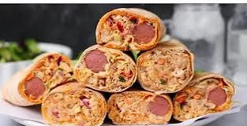

Shawarma

Description
This chicken shawarma recipe features tender, marinated chicken breast seasoned with garlic powder, cumin,
paprika, cumin paprika, cayenne pepper, and tangy unsweetened yogurt.
Wrapped in lebanese bread with a filling og creamy sauces, fresh cabbage, grated carrot, and grilled hot dogs, it
offers a hearty, flavorful meal with a perfect blend of spice, creaminess, and freshness.
Ingredients
For the shawarma:
- 1 kilogram chicken breast
- 1 teaspoon garlic powder
- 1/2 teaspoon salt
- 1 teaspoon paprika
- 1 teaspoon cayenne pepper
- 1/4 cup unsweetened yogurt
- 2 tablespoons vegetable oil
- 4 hot dogs
- 4 lebanese bread
- 1 teaspoon cumin
For the filling:
- 1/4 cup mayonnaise
- 2 tablespoons ketchup
- 1 teaspoon sweet chili sauce or 1/2 teaspoon sugar
- 1 teaspoon lemon juice
- 1/4 cup purple cabbage (for color)
- 1 cup cabbage
- 1 medium carrot
Steps
- Marinate chicken breasts in a mixture of garlic powder, cumin, salt, paprika, cayenne, unsweetened yogurt,
and vegetable oil.
- Refrigerate the marinated chicken for 1 hour.
- Grill the marinated chicken and hot dogs.
- Shred the grilled chicken.
- Prepare a filling by mixing mayonnaise, ketchup, chili sauce, and lemon juice.
- Thinly slice cabbage and grate the carrot, then mix them together.
- Spread the sauce on the lebanese bread.
- Add the mixed veggies, hot dog, and shredded chicken to the lebanese bread.
- Wrap the lebanese bread around the filling.
- Grill the shawarma to seal the wrap.